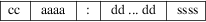

srec_emon52 - Elektor Monitor (EMON52) file format
This format is used by the monitor EMON52, developed by the European electronics magazine Elektor (Elektuur in Holland). Elektor wouldn’t be Elektor if they didn’t try to reinvent the wheel. It’s a mystery why they didn’t use an existing format for the project. Only the Elektor Assembler will produce this file format, reducing the choice of development tools dramatically.
Records
All data lines are called records, and each record contains
the following four fields:

The field are defined as follows:
|
cc |
The byte count. A two digit hex value (1 byte), counting the actual data bytes in the record. The byte count is separated from the next field by a space. | ||
|
aaaa |
The address field. A four hex digit (2 byte) number representing the first address to be used by this record. | ||
|
: |
The address field and the data field are separated by a colon. | ||
|
dd |
The actual data of this record. There can be 1 to 255 data bytes per record (see cc) All bytes in the record are separated from each other (and the checksum) by a space. | ||
|
ssss |
Data Checksum, adding all bytes of the data line together, forming a 16 bit checksum. Covers only all the data bytes of this record. |
Please note that there is no End Of File record defined.
Byte
Count
The byte count cc counts the actual data bytes in the
current record. Usually records have 16 data bytes. I
don’t know what the maximum number of data bytes is.
It depends on the size of the data buffer in the EMON52.
Address
Field
This is the address where the first data byte of the record
should be stored. After storing that data byte, the address
is incremented by 1 to point to the address for the next
data byte of the record. And so on, until all data bytes are
stored.
The address is represented by a 4 digit hex number (2 bytes), with the MSD first.
Data
Field
The payload of the record is formed by the Data field. The
number of data bytes expected is given by the Byte Count
field.
Checksum
The checksum is a 16 bit result from adding all data bytes
of the record together.
Size
Multiplier
In general, binary data will expand in sized by
approximately 3.8 times when represented with this
format.
Here is an example of an EMON52 file:
10 0000:57 6F 77 21 20 44 69 64
20 79 6F 75 20 72 65 61 0564
10 0010:6C 6C 79 20 67 6F 20 74 68 72 6F 75 67 68 20 61 05E9
10 0020:6C 6C 20 74 68 69 73 20 74 72 6F 75 62 6C 65 20 05ED
10 0030:74 6F 20 72 65 61 64 20 74 68 69 73 20 73 74 72 05F0
04 0040:69 6E 67 21 015F
http://sbprojects.fol.nl/knowledge/fileformats/emon52.htm
This man page was taken from the above Web page. It was written by San Bergmans <sanmail@bigfoot.com>